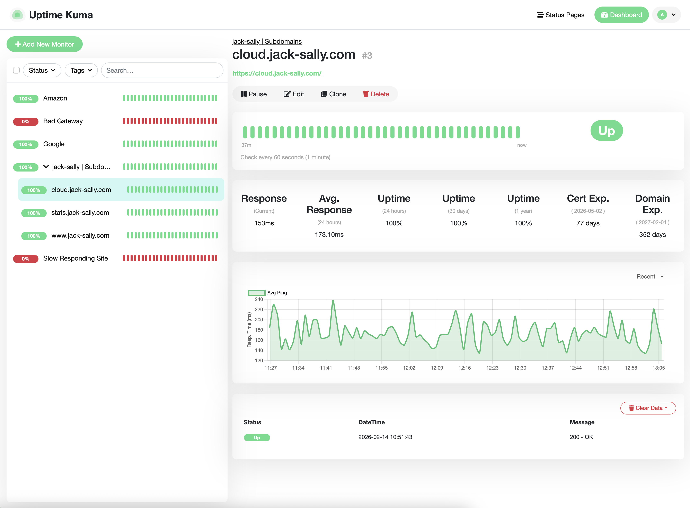

This domain is currently owned and managed by Martynas Zigmantas
This homepage is deployed using Cloudflare Pages and connected to a GitHub repository for version control and streamlined updates. The site is built as a static HTML project using W3.CSS templates, ensuring a lightweight, fast, and responsive design. Changes pushed to the GitHub repository are automatically deployed, providing a simple and reliable continuous deployment workflow. This setup ensures performance, security, and maintainability while keeping the infrastructure minimal and efficient.
This instance is hosted on a dedicated on-premises physical server running Ubuntu 24.04 LTS, ensuring full control over hardware and data. The deployment is containerized using Docker for isolation, portability, and simplified maintenance. Services are securely exposed through Cloudflare, which provides DNS management, TLS encryption, DDoS protection, and reverse proxy routing to the subdomain. This setup ensures high reliability, strong security, and complete ownership of the infrastructure and stored data.
Demo account:
Username: nextcloud_guest@protonmail.com
Password: Welcome2Cloud!
This setup provides full visibility and control over service availability without relying on third-party monitoring providers. The deployment mirrors the cloud instance architecture, ensuring stability, simplified updates, and service isolation. The dashboard benefits from encrypted connections and enhanced network protection. Hosting Uptime Kuma internally enables private infrastructure monitoring, customizable alerting, and complete data ownership, ensuring service health can be tracked reliably and independently.
